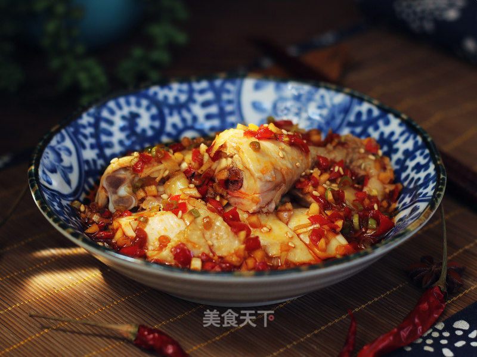

口水鸡(Saliva Chicken)

传统的口水鸡做法是要将整鸡用葱姜水煮半小时左右，然后倒掉汤汁只取鸡肉。
但是用这款美的蒸烤箱，纯蒸功能能保证鸡肉的鲜味和营养不流失在水中，更加鲜嫩美味；
与传统的蒸锅、煮锅相比，密封性能更好，不会使厨房变得闷热潮湿，自动定时功能也很方便。
一起来看看做法吧。
食材
- 三黄鸡 一只
- 盐 5克
- 生抽 12克
- 白糖 8克
- 红油 1大勺
- 花椒油 半勺
- 白胡椒粉 少许
- 葱 适量
- 小米椒 几个
- 熟芝麻 少许
- 熟花生碎 少许
- 冰水 适量
- 姜 适量
- 蒜 适量
步骤
- 准备好各种食材。
- 三黄鸡清洗干净后，将葱姜塞入鸡腹中，装在盘中。
- 将盘子放入美的蒸烤箱第三层，按三次功能键，选择“纯蒸模式”，设置温度为110度，时间20分钟左右。
具体时间要根据鸡的个头大小，酌情增减。启动前别忘了给水箱中加满冷水。
如果无水操作，这款蒸烤箱会有连续的“嘀嘀”报警提示音。
- 在蒸鸡的同时，来准备调味汁。
将蒜末、葱花、切碎的小米椒、糖、盐、生抽、白胡椒粉一起倒入拌料盆中搅匀。
- 加入花椒油、芝麻油和一大勺红油，搅匀备用。
- 纯蒸功能很快完成了，将蒸好的鸡从蒸烤箱中取出。
- 可以看到整鸡非常鲜嫩，盘底只有少量汤汁。
此时可将葱姜丢掉，盘底的鸡汤不要倒掉，加入调味汁中更鲜美。
- 将整只鸡泡入冰水中，冰镇之后口感更好。
- 将鸡肉取出，擦净表面水分，放在砧板上，
用刀从中间一分为二，卸掉鸡腿和鸡翅后，斩成手指宽的长块。
- 将鸡块装入稍有深度的盘中。
- 把2勺鸡汤加入调味汁中拌匀，浇在鸡块上，
再撒上花生碎和芝麻，香辣诱人的口水鸡就做好了。
- 准备好各种食材。